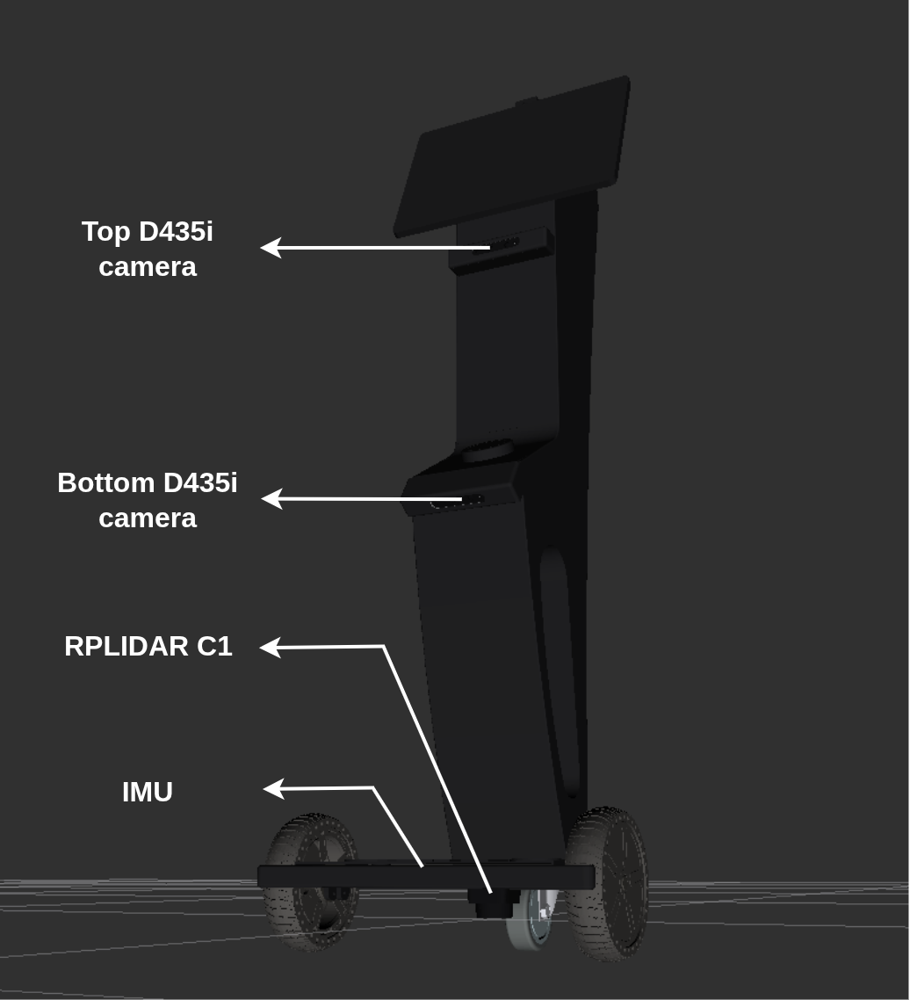

Introduction¶
Navigation Challenge¶
The simulation platform to be used in this challenge is Gazebo Harmonic. Teams are required to develop, test and submit software to successfully complete the task of autonomously navigating the CAYTU Sito-É in the restaurant, from its start position to the goal position.
To attempt this challenge, teams are encouraged to use the Nav2 navigation framework. The following links provide documentation and tutorials on getting started with Nav2.
Vision Challenge¶
*In progress
Teams are provided with the CAYTU Sito-É’s ROS 2 packages and Gazebo environment models (see description below) to enable them develop and test their solutions (see GitHub Repository).
The CAYTU Sito-ɶ
The CAYTU Sito-É is an unmanned ground vehicle (UGV) equipped with different sensors to help you achieve your goal. The sensors are:
-
RPLIDAR C1: A LiDAR sensor located at the top of the base of the robot. The RPLIDAR C1 publishes on the
/scantopic. -
D435i Depth Camera (x2): One camera is mounted below the monitor the robot and the other towards the robot’s base. These cameras publish color data on the topics
/top_camera_color/image_rawand/bottom_camera_color/image_rawand 3D point cloud data on/top_camera_depth/pointsand/bottom_camera_depth/points. There are also topics for compressed images which use lower bandwidth compared to the standard raw image. Considering the top D435i camera, these topics are/top_camera_color/image_raw/compressedand/top_camera_color/image_raw/theora, with similar topics available for the bottom D435i camera as well. -
IMU: An IMU sensor is added to the base and publishes on the
/imutopic.
The figure below shows the Sito-É with the sensors labelled.
